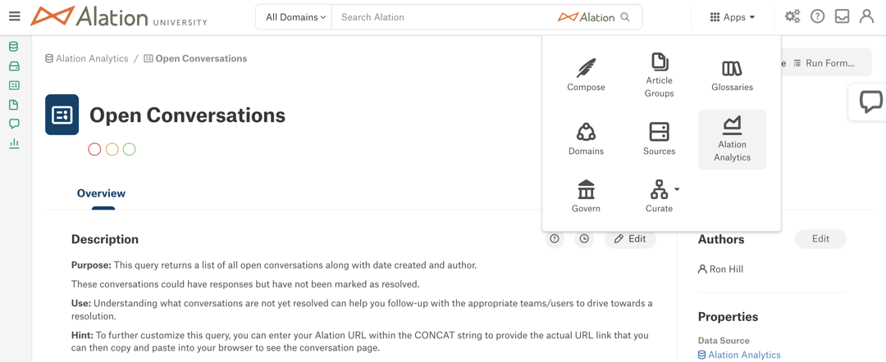
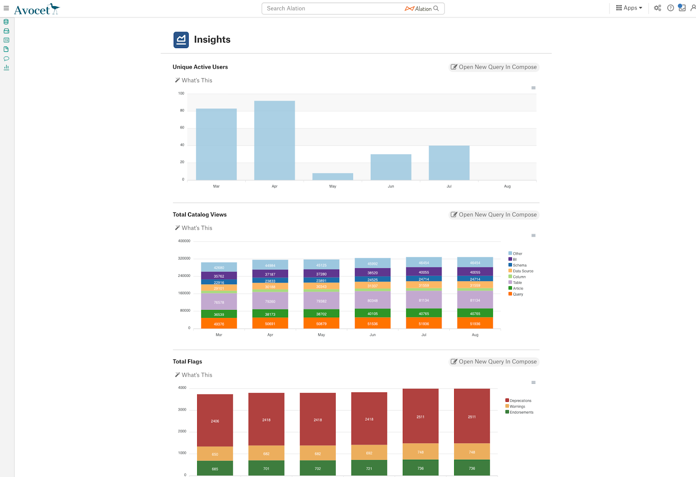
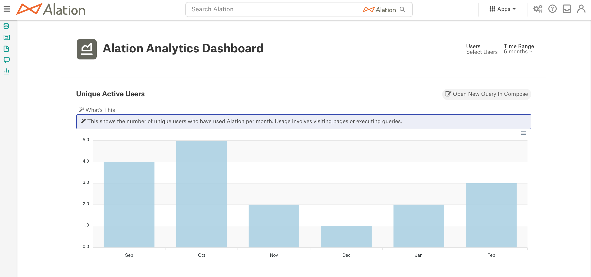
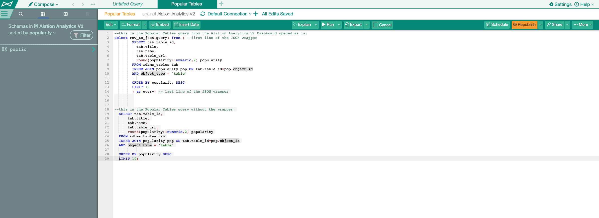
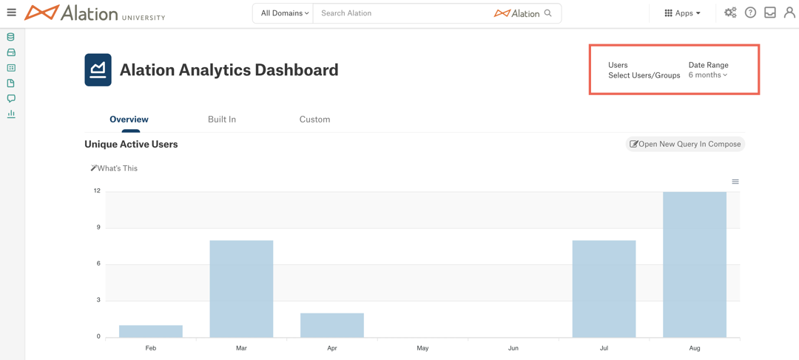
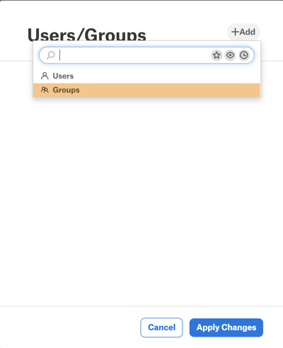
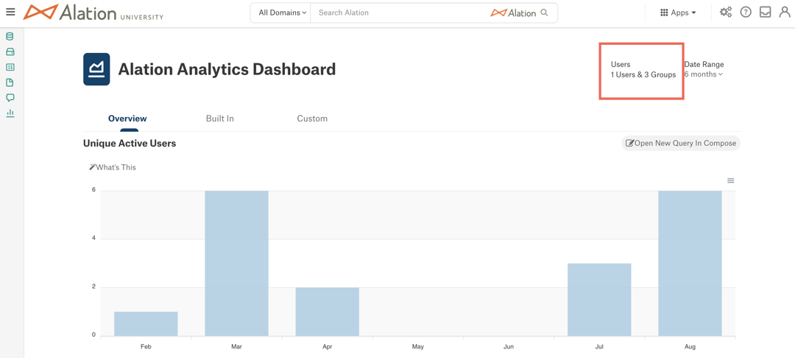
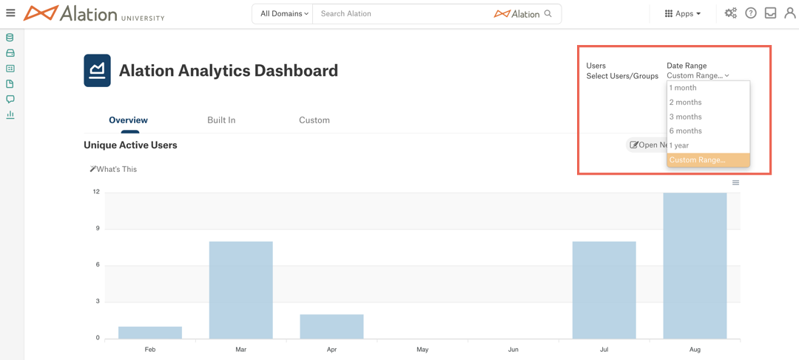

Alation Analytics V2 Dashboard¶
Alation Cloud Service Applies to Alation Cloud Service instances of Alation
Customer Managed Applies to customer-managed instances of Alation
Available from version 2020.3
After enabling the Alation Analytics V2 data source, admin users get access to the Alation Analytics Dashboard with out-of-the-box visualizations of the catalog usage at your organization.
For Source Admins, Catalog Admins, and Server Admins, the Apps menu on the main toolbar includes the Alation Analytics menu option (from release 2020.4).
Note
In version 2020.3, this menu option is named Analytics.
Users with the Steward, Composer, and Viewer roles do not have access to the Alation Analytics application.
View the Alation Analytics Dashboard¶
To view the Alation Analytics Dashboard, click the Analytics or Alation Analytics icon in the Apps menu on top right.

Note
The name of the dashboard differs depending on your release:
Insights (release 2020.3)
Alation Analytics Dashboard (from release 2020.4).
The report data on the Alation Analytics Dashboard will only be available if enough data has been loaded with the ETL process. If you don’t see any results, try adjusting the Date Range filters. The longer the Alation Analytics application is in use, the more data becomes available for the dashboard over time.

Alation Analytics Reports¶
The out-of-the-box reports on the Alation Analytics Dashboard are:
Unique Active Users (available from 2020.3) — A bar chart that shows the number of unique users who have logged in by month, for the last six months.
Total Catalog Views (available from 2020.3) — A stacked bar chart that shows the number of catalog views by object type by month, for the last six months.
Total Flags (available from 2020.3) — A stacked bar chart that shows the sum of flags by flag type by month, for the last six months.
Compose Query Executions (available from 2020.3) — A bar chart that shows the number of SQL statement executions by month, for the last six months.
Popular Articles (available from 2020.3) — A bar chart that shows total and unique views for the top ten most popular articles based on the last six months of data. Ranking for articles is determined using all visits vs. unique visits. Links to the top ten articles appear under the chart.
Popular Queries (available from 2020.4) — A bar chart that shows the top ten popular published queries based on the last six months of data. Popularity is determined by the number of times a query is executed by unique users.
Popular Tables (available from 2020.4) — A bar chart that shows the top ten most popular tables based on the last six months of data. The report is based on the table Popularity field in Alation.
Top Search Terms (available from 2021.2) — A bar chart that shows ten most popular search keywords where users clicked on a result after searching for the keyword.
The reports are updated after every ETL if the relevant data has changed.
Report Descriptions¶
Click on the What’s This link on top left of the chart area to display the description of the chart.

Custom Visualizations¶
Available from version 2021.2
If a Server Admin has added custom visualizations from Tableau to the Alation Analytics Dashboard, they will appear on the Custom tab. To see the custom views, users will need to first log in to their Tableau Server from Alation. After successful authentication, the custom reports should become available for viewing.
On how to configure the Custom tab, see Embed External Visualizations.
Copy the Alation Analytics Dashboard Query to Compose¶
Admin users who have access to the Alation Analytics V2 data source as Viewers, Queriers, or Data Source Admins, can view the SQL behind the Alation Analytics reports in Compose.
To view the query SQL in Compose, click the Open New Query In Compose button on the top right of a chart. This will copy the underlying query to a new Compose query tab. Note that this action does not allow modifying the report itself. It only copies the SQL to Compose as a cloned new query. The changes you may choose to make to this copy of the query do not affect the reports on the Alation Analytics Dashboard.
Note
The Open New Query In Compose button will only be available if you have access to the Alation Analytics V2 data source as Viewer, Querier, or Data Source Admin.
When you run an Alation Analytics Dashboard query in Compose as is, it returns the results in the JSON format. To view the results in the table format, remove the wrapper that encodes the results in JSON, verify the SQL code and then run the query. The wrapper is the first and the last lines of the copied query:
SELECT row_to_json(query) FROM ( <query SQL> ) AS query;

Export Charts into SVG, PNG, or CSV¶
On the Alation Analytics Dashboard, you can export the report visualization into the SVG, PNG, or CSV formats. To export, click the Export menu on the top right of the chart area and click the format you need. The file will be downloaded to your computer.
{kind=link}
Filters¶
Available from release 2021.1
By default, the Alation Analytics Dashboard displays the data for all catalog users and the date range of the last six months.
You can use the Users and Date Range filters located in the upper right corner of the dashboard next to the page title to change the focus of the dashboard data.

Users Filter¶
The Users filter allows to focus the Dashboard data on:
Specific users
Specific users or groups (available from release 2021.2)
To apply the users or groups filter:
Click the Select Users or Select Users/Groups link under Users on the upper right of the dashboard. The Users dialog will open.
Click the + Add button and type a user’s or group’s name in the Quick Search field or select the Users or Groups object type to search within.
Note
The Groups option is available from version 2021.2.
You can select multiple users or groups for the filter by clicking + Add again and adding more user and group names before applying the filter.
Click Apply Changes in the dialog to apply the filter to the dashboard.
All the charts will show results for the selected users or groups only. You can click the the link displaying the number of selected users and/or groups to view the list of filter values.

{kind=link}
Remove Users or Groups from the Users Filter¶
Click the link displaying the number of selected users and groups.
Mouse over the user or group that you wish to delete and click X to the right of the user or group name to delete this value from the filter.
Click Apply Changes to apply the changes.
{kind=link}
Date Range Filter¶
You can change the amount of data in the reports by selecting a specific date range. To apply the Date Range filter:
Click the 6 months option (default setting) to open the date range selector.
From the drop-down list, select a range.
Custom Range¶
You have the option to select a custom date range for the dashboard. To set a custom range:
Expand the Date Range filter and select Custom Range from the list. The filter will change to the custom range view.
Click on the field that displays the date. This will open a date picker widget.
Select a month, a year, a start and an end date from the date picker.
Click outside of the date picker to close it. The custom range that you selected will be displayed in the Date Range field.
Click Apply Filters to apply the filter to the dashboard.
{kind=link}
{kind=link}
{kind=link}
Reset the Custom Date Range Filter¶
To remove the custom date range, click X next to the custom date range.
{kind=link}